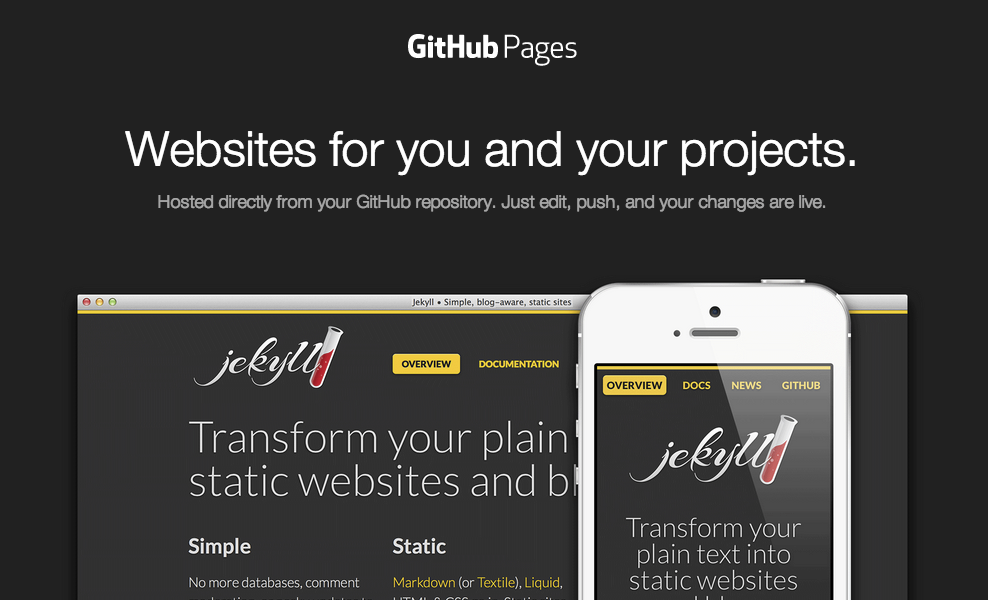

How To Create GitHub Pages on GitHub using Git.
Siap untuk memulai? Bangun situs Anda sendiri dari awal atau buat satu untuk proyek Anda.
LANGKAH LANGAKAH PEMBUATAN WEBSITE DI GITHUB PAGES DENGAN SISTEM GIT:
1. Untuk membuka fitur github page pertama yaitu dengan membuat repository di website github.
2. Setelah membuat Repository di github kemudian clone repository tersebut menggunakan git, yaitu dengan git bash here pada folder tujuan clone lalu ketik git clone url(link dari repo di github).
3. Setelah melakukan clone, sekarang masuk tahap pembuatan web site. Untuk membuat website disini saya menggunakan aplikasi editor VSCODE dan mendownload template website di website FreeHTML.co . Setelah mendownload tamplate kemudian di ekstrak here di folder repository saya tadi. Setelah di Ekstrak mulai pembuatan website menggunakan VSCODE
4. Setelah Menurut kalian websitenya sudah siap untuk di publish.Sekarang waktunya untuk mengunggah semua file di repo lokal ke repo di github. Untuk mempush nya juga dengan git, yaitu dengan git bash folder repo lokal disini punya saya yaitu “Web-site_Rijal”.Setelah itu ketikan git add –all. Selanjutnya ketikkan git commit “initial commit”.Lalu ketik git push –u origin master. Nah sekarang semua file di repo lokal sudah ada di repo github.
5. Seelanjutnya untuk mengaktifkan githupage perttama pergi ke setting di tempat repository. Kemudian scrool ke bawah disebelah kiri layar ada tulisan pages. Klik pages itu kemudian menentukan branch mana yang ingin dibuat menjadi github page. Setelah itu save kemudian akan muncul link website github page.
6. Setelah mendapat kan link tersebut github akan membuatkan pages dengan code di repo github. Estimasi waktu github dapat menampilkan website kita sekitar 2-3 menit setelah kita mempush code saya.. Jika misal dirasa ada yang kurang dari website nya, kita bisa mengedit lagi code html di repo local kemudian mengikuti langkah langkah push seperti sebelumnya, nantinya website juga akan diperbarui sesuai perubahan yang dilakukan.